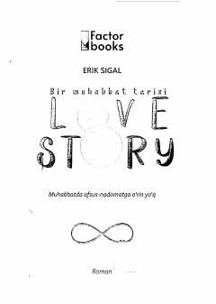

BMIkki yoshning sof, ta'sirli va fojiali muhabbati haqidagi mashhur roman.
Ushbu asar ikki yosh — Oliver va Jennining qalb kechinmalari, ularning sof va fojiali muhabbati haqida hikoya qiladi. Boy oiladan chiqqan yigit va oddiy oila qizining taqdiri kesishgan munosabatlari o'quvchini chuqur o'ylantiradi va ta'sirlantiradi.